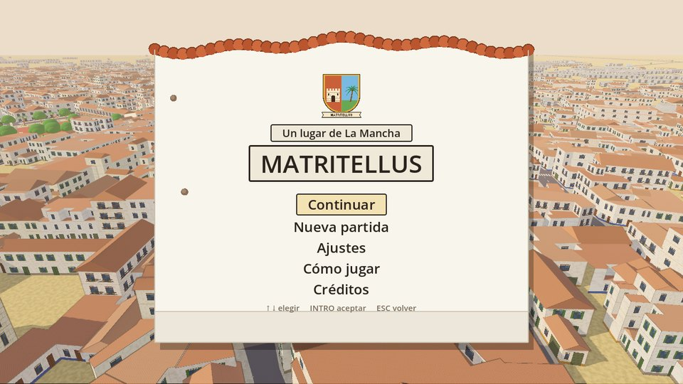
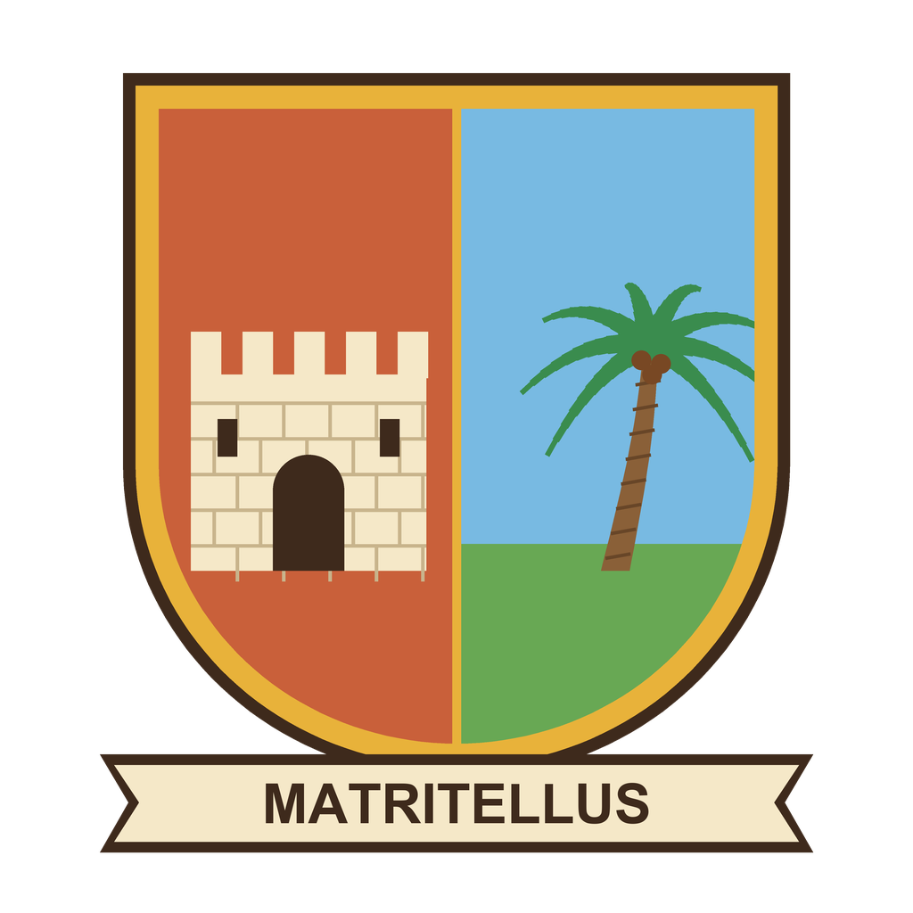

Matritellus
v0.0.21Juego de mundo abierto en 3D sobre Madridejos (Toledo) bajo LomoXGames. Calles y casas levantadas con datos reales (Catastro, IGN, OSM) y edificios hechos a mano, misiones costumbristas, Puntos Cívicos, 6 emisoras de radio, recreativos jugables y manchego de verdad.